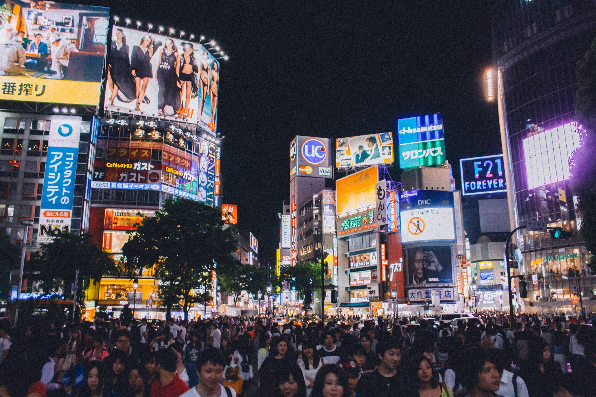
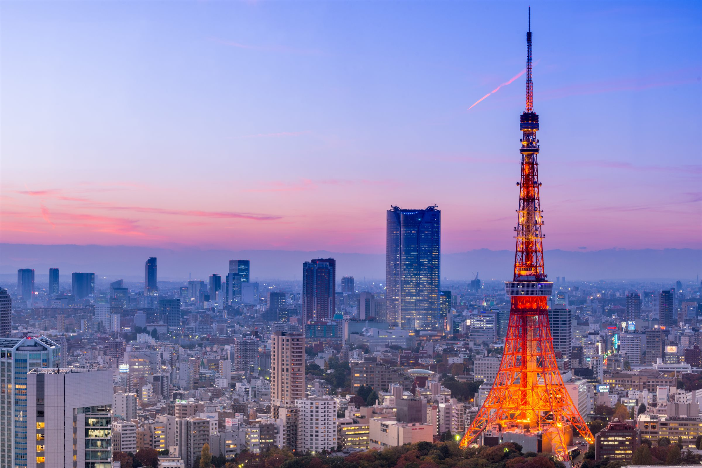
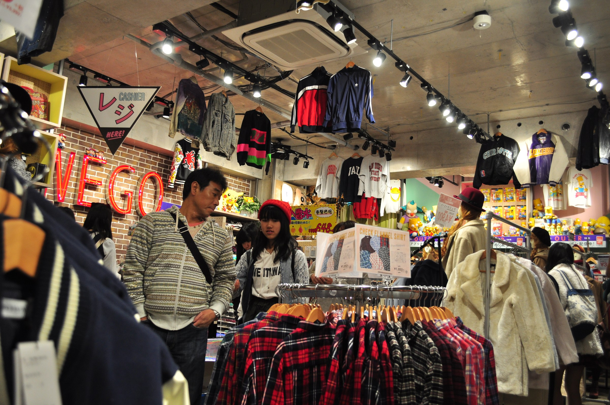
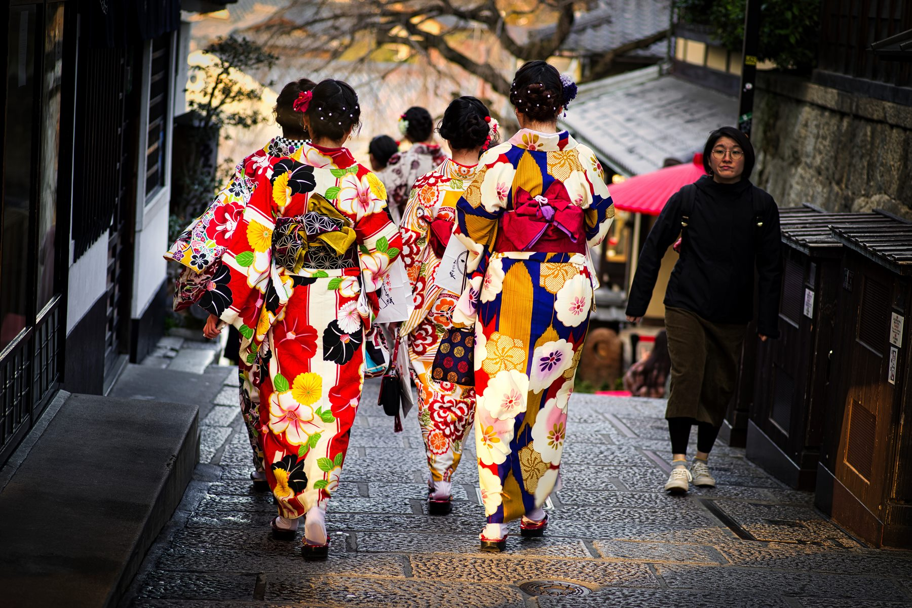
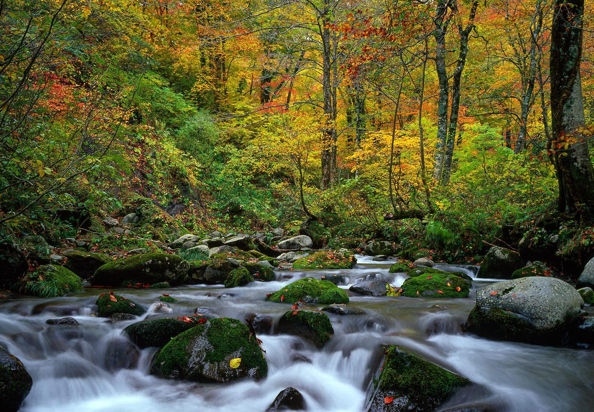
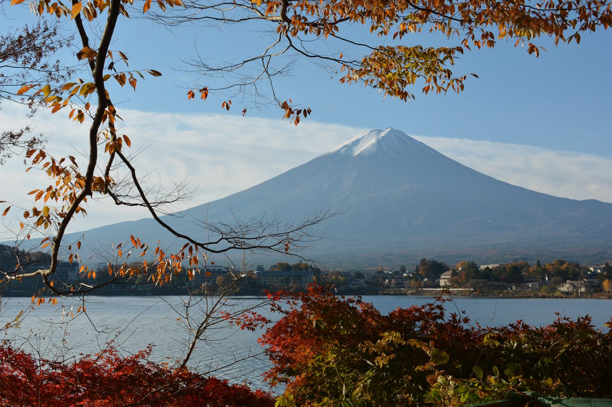
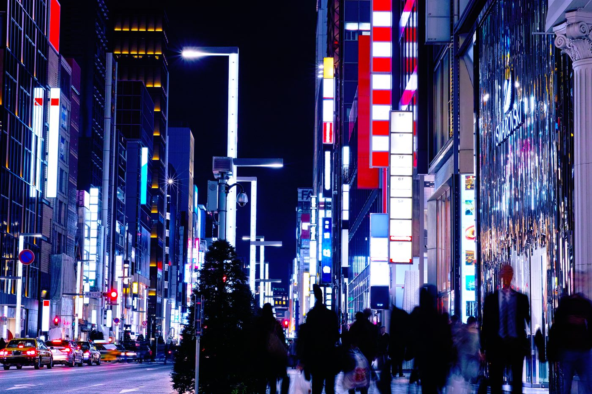
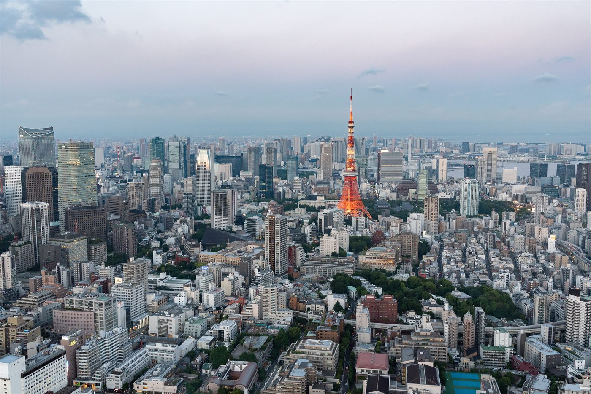
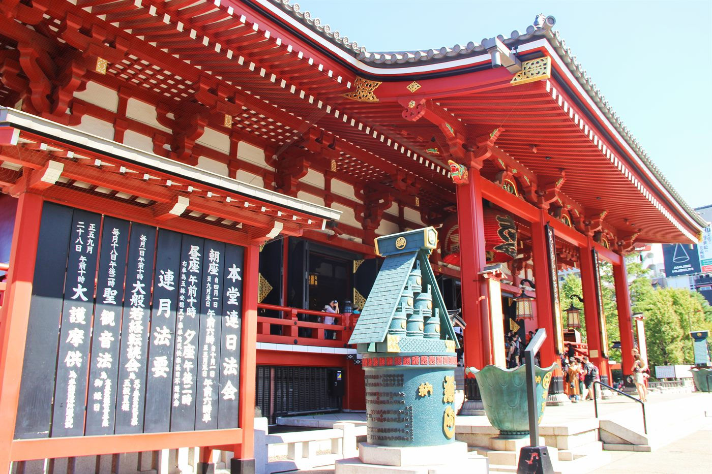
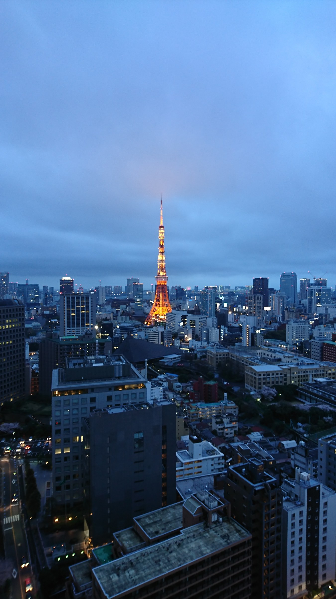

Tokyo Halloween
Costume shopping, themed activities, supervised photo sessions, and calendar-based events give the trip clear seasonal timing.

Halloween · Cosplay · Autumn leaves
A 10-day late-October Japan trip combining Tokyo Halloween, Disney, cosplay culture, digital art, Mt. Fuji views, and autumn leaves.
10 days · Late October · Halloween, cosplay, and autumn leaves
Dates, pace, activities, accommodation level, learning goals, and supervision can be adjusted for schools, families, clubs, and private groups.
Overview
This late-October trip combines Tokyo Halloween, Disney, cosplay culture, Harajuku and Shibuya style, anime districts, and digital art with Mt. Fuji-area autumn leaves and a nearby nature segment.
The trip is highly visual and well suited to teens, families, and photography-minded travelers. For minors, crowded nighttime areas should be handled through scheduled, supervised activities rather than open-ended late-night street participation.
Highlights
Costume shopping, themed activities, supervised photo sessions, and calendar-based events give the trip clear seasonal timing.
Tokyo Disneyland or DisneySea provides a family-friendly, well-managed anchor for the Halloween theme.
Ikebukuro, Harajuku, and themed cafés can support youth-friendly pop-culture discovery.
Kawaguchiko, Mt. Fuji views, lakeside photography, and the autumn corridor keep the trip from feeling too city-heavy.
teamLab, Shibuya Sky, Tokyo Tower, or Roppongi views create evening content without relying on crowded street events.
If public Halloween events change, the itinerary still works through Disney, Ikebukuro, Harajuku, teamLab, and autumn scenery.
Day by day
Airport transfer, hotel check-in, and a welcome briefing on Halloween schedules, safety expectations, and group pacing.

Visit Meiji Jingu, Takeshita Street, Shibuya, Loft, Don Quijote, and costume or photo-prop shops.

Spend a full day at Tokyo Disneyland or DisneySea with seasonal decorations, parades, themed food, and character experiences.

Choose Nikko for Toshogu, Kegon Falls, and Lake Chuzenji, or Hakone for Lake Ashi, Owakudani, and onsen.

Enjoy Mt. Fuji views, lakeside photography, the autumn corridor, onsen, or a Fuji-themed museum before returning to Tokyo.

Explore Sunshine City, Animate, Otome Road, themed cafés, and calendar-based cosplay activity options.

Use confirmed events, supervised group costume photography, Harajuku-style activities, Ikebukuro options, or a private themed session.
Rest in the morning, then visit teamLab Planets or a similar digital art experience, followed by an evening at Shibuya Sky, Tokyo Tower, or Roppongi.

Choose Akihabara, Ginza, Odaiba, Asakusa, Ueno, shopping, cosplay photography, or themed cafés based on group interest.

Airport transfer and departure.
Booking and travel terms
These are the general terms. Final pricing, payment dates, and change or cancellation conditions are confirmed in the tailored proposal after the itinerary and services are agreed.
Share your dates, group profile, and priorities. We confirm feasibility, issue a tailored proposal, and begin reservations after written approval and the planning deposit.
A planning deposit confirms the booking. The remaining balance is divided into scheduled payments shown in the proposal, with final payment due before departure.
Cancellation terms follow the tailored proposal and supplier contracts. Fees may increase closer to departure and after tickets, activities, or rooms become non-refundable.
Comprehensive travel insurance is strongly recommended from the time of deposit, including medical care, cancellation, interruption, baggage, and activity-specific cover.
Trip moments


This trip is best for teens, families, and travelers who want to experience Japan’s seasonal events.
Request Info